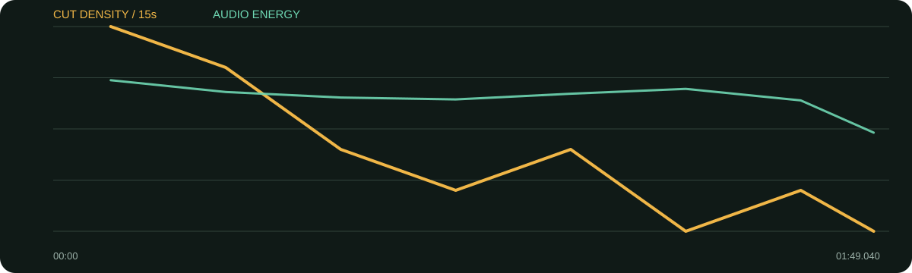

景别 / 机位系统
- 来源画面被重新排版到竖屏黑/深色画布
- 主要靠同源近/中景裁切与说话者切换
- 固定顶部标题让不同镜头保持统一
- 资料截图只在需要补充语境时短暂出现
它没有重拍多机位，而是把原访谈放进稳定的竖屏栏目框架：顶部母题持续存在、下方字幕承接金句，少量截图/资料插入证明来源。内容选择比转场更重要。
口径说明：候选镜头由场景检测生成，闪光、人物快速动作、数字推拉和图形变化都可能误触发；逐秒重点由真实原片、字幕语义和全片总览人工选择。字幕来自本地中文语音识别，人名、品牌名与行业词可能有误，不把自动转写当逐字稿。
每张总览按时间顺序覆盖全片。它用于检查章节、B-roll密度和景别回环；详细切点以候选镜头表与下面的逐秒重点为准。
| 时间 | 章节 | 内容推进 | 剪辑任务 |
|---|---|---|---|
| 00:00–00:18 | 工作演别人，生活演自己 | 以任性、叛逆和不勉强定义自我。 | 顶部母题持续，人物近景直接给金句。 |
| 00:18–00:58 | 允许发呆 | 行程填满不等于丰富，身体会在发呆时回应。 | 资料截图短暂插入后回人物。 |
| 00:58–01:28 | 自然与安定 | 清静、山林、海和溪流带来稳定。 | 语速放松，裁切变化减少。 |
| 01:28–01:49 | 减法生活 | 断舍离，把精力花在值得燃烧之处。 | 最后金句完整收束。 |
B-roll极少，核心是资料/截图插入和同源重构；视觉变化服务“扮演自己—允许发呆—自然安定—减法生活”的语义台阶。
综合音轨能量平稳，社交摘编以人声清晰为主。未分离背景音乐，无法确认具体音乐进出。
每张长图从左到右为真实的连续秒点。重点不是记住截图，而是看清一组画面怎样“进入—完成任务—退出”。
画面事实顶部主题常驻，来源画面居中，观众立刻知道内容价值。
怎么复现先定栏目母题，再选一条与母题直接相撞的开场句。
画面事实短暂离开人物补充语境，随后快速回到原声。
怎么复现截图必须可读，至少停留1.5秒，且标明来源。
画面事实内容反向，景别/字幕断句同步变化。
怎么复现转折词前后分成两屏字幕，不要挤在同一行。
画面事实不靠巨字，靠完整句和短停顿落地。
怎么复现金句后留0.3—0.6秒，不立刻塞下一句。
画面事实从感受进入行动建议，画面复位。
怎么复现建议类结尾用一个明确动词开头。
画面事实最后价值句稳定留在人物脸上。
怎么复现不要用无关风景盖住最重要的结论。

| 观察项 | 15秒窗口 |
|---|---|
| 视觉最密 | 00:00–00:15（20.0 候选切镜/分）；00:15–00:30（16.0 候选切镜/分）；00:30–00:45（8.0 候选切镜/分） |
| 视觉最缓 | 01:15–01:30（0.0 候选切镜/分）；01:45–01:49（0.0 候选切镜/分）；00:45–01:00（4.0 候选切镜/分） |
| 综合音轨最强 | 00:00–00:15（-21.8 dBFS）；01:15–01:30（-23.7 dBFS）；00:15–00:30（-24.4 dBFS） |
“视觉最密/最缓”基于自动候选切镜；“综合音轨最强”包含人声、环境声、音乐和音效，不能单独当作配乐音量。平均综合音轨为 -24.98 dBFS，最高15秒窗口 -21.80 dBFS，最低15秒窗口 -33.32 dBFS。
| # | 入点 | 出点 | 时长 | 代表帧秒点 | 证据 |
|---|---|---|---|---|---|
| 1 | 00:00.000 | 00:00.960 | 0.96s | 0.432000s | 自动候选 |
| 2 | 00:00.960 | 00:03.320 | 2.36s | 1.710000s | 自动候选 |
| 3 | 00:03.320 | 00:05.840 | 2.52s | 4.070000s | 自动候选 |
| 4 | 00:05.840 | 00:09.720 | 3.88s | 6.590000s | 自动候选 |
| 5 | 00:09.720 | 00:14.840 | 5.12s | 10.470000s | 自动候选 |
| 6 | 00:14.840 | 00:16.400 | 1.56s | 15.542000s | 自动候选 |
| 7 | 00:16.400 | 00:17.680 | 1.28s | 16.976000s | 自动候选 |
| 8 | 00:17.680 | 00:18.800 | 1.12s | 18.184000s | 自动候选 |
| 9 | 00:18.800 | 00:22.080 | 3.28s | 19.550000s | 自动候选 |
| 10 | 00:22.080 | 00:24.160 | 2.08s | 22.830000s | 自动候选 |
| 11 | 00:24.160 | 00:34.280 | 10.12s | 24.910000s | 自动候选 |
| 12 | 00:34.280 | 00:37.000 | 2.72s | 35.030000s | 自动候选 |
| 13 | 00:37.000 | 00:43.320 | 6.32s | 37.750000s | 自动候选 |
| 14 | 00:43.320 | 00:48.440 | 5.12s | 44.070000s | 自动候选 |
| 15 | 00:48.440 | 00:56.200 | 7.76s | 49.190000s | 自动候选 |
| 16 | 00:56.200 | 01:05.440 | 9.24s | 56.950000s | 自动候选 |
| 17 | 01:05.440 | 01:09.440 | 4.00s | 66.190000s | 自动候选 |
| 18 | 01:09.440 | 01:12.400 | 2.96s | 70.190000s | 自动候选 |
| 19 | 01:12.400 | 01:15.760 | 3.36s | 73.150000s | 自动候选 |
| 20 | 01:15.760 | 01:31.520 | 15.76s | 76.510000s | 自动候选 |
| 21 | 01:31.520 | 01:34.160 | 2.64s | 92.270000s | 自动候选 |
| 22 | 01:34.160 | 01:46.040 | 11.88s | 94.910000s | 自动候选 |
| 23 | 01:46.040 | 01:49.040 | 3.00s | 106.790000s | 自动候选 |